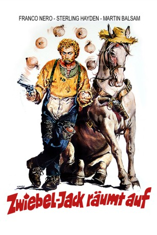

#5132 Zwiebel-Jack räumt auf
 
 IMDB-Wertung: 5.5 / 10
IMDB-Wertung: 5.5 / 10  Metascore: 0
Metascore: 0 
Eine skrupellose Ölgesellschaft kontrolliert mit üblen Methoden ganz Paradise City. Immer mehr Farmer beugen sich eingeschüchtert dem Terror und verkaufen entmutigt ihr Land. Die Super Oil Company hat die Rechnung allerdings ohne Zwiebel-Jack gemacht. Ein großer Fehler, denn der sagt der Firma den Kampf an.
Jahr: 1975
Dauer: 91 Minuten
FSK: 12
Land: Italien Studio: Warner-Columbia FilmverleihTonspuren:
Untertitel: Deutsch,
Auflösung: 1080p (1792x1080) Größe: 10854 MB
Genre: Komödie, Western
Regisseur: Enzo G. Castellari
Drehbuch: Andrew J. Fenady
Soundtrack:
Darsteller:
 Franco Nero als Onion Stark
Franco Nero als Onion Stark Sterling Hayden als Henry 'Jack' Pulitzer
Sterling Hayden als Henry 'Jack' Pulitzer Martin Balsam als Petrus Lamb
Martin Balsam als Petrus Lamb- Emma Cohen als Mary Ann Pulitzer
 Dan van Husen als Deputy Zachary
Dan van Husen als Deputy Zachary- Dick Butkus als Jeff
- Enzo G. Castellari als Deputy Sheriff , uncredited
- Antonio Pica als Hal Foster , uncredited
 George Rigaud als Terrateniente , uncredited
George Rigaud als Terrateniente , uncredited- Leo Anchóriz als Sheriff
 Romano Puppo als Stinky
Romano Puppo als Stinky- Nazzareno Zamperla als Oblò - 'Monocle'
- Massimo Vanni als Buck, Lamb Henchman
- Helmut Brasch als Judge Logan
- Duilio Cruciani als Cal 'Caligola' Foster
- Fernando Castro als Dutch Foster
- Wal Davis als Zeke
- Agustín Bescos als Oil Board Member , uncredited
- Xan das Bolas als Sam - Merchant , uncredited
- Charly Bravo als Judd , uncredited
- Alejandro de Enciso als John , uncredited
- Leopold Francis als Mack , uncredited
- Daniel Martín als Jim , uncredited
- Juan Antonio Rubio als (uncredited
- Lucy Tiller als Violet , uncredited
- Mariano Vidal Molina als Owen , uncredited
- David Warbeck als Villain with Sunglasses , uncredited
- Manuel Zarzo als Jack , uncredited
Datei: X:\HD-Western-1960-1979\Zwiebel-Jack räumt auf (1975, FSK12, 1792x1080).mkv seit 23.12.2016
Festplatte: HD Eastern+Western
 Es gibt insgesamt 110 Filme in der Gruppe 'HD-Western-1960-1979'
Es gibt insgesamt 110 Filme in der Gruppe 'HD-Western-1960-1979'